Crafts
Stuff I've made over the years, mostly crochet
Slowly moving my photos and notes over from other websites.
Mosaic cushions (in progress 2020)
Wool-ease yarn in "Denim" and "Heather Gray", approx one skein of each per pillow front.
The big ones are 18", the small one is 16".
First pattern based on the Nya Infinity pattern (https://www.lillabjorncrochet.com/2019/07/nya-infinity-mosaic-blanket.html), which is written for row-by-row work, and modified it for in-the-round. The original motif was not square so that took some fiddling.
Second pattern is the "Dioon" pillow (https://mycrochetory.com/dioon-crochet-pillow-free-pattern/) with a minor mod to the first two rows, and extension & modification to make it the same size as pillow #1. (Simply repeating the white and blue waves didn't quite work along the edges.)
Third pattern.... I'll have to track down the source. It was just a digital paint pattern, not a crochet pattern.
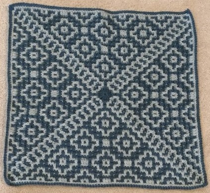
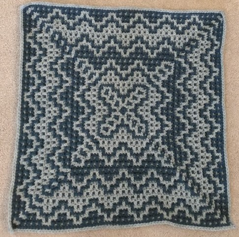
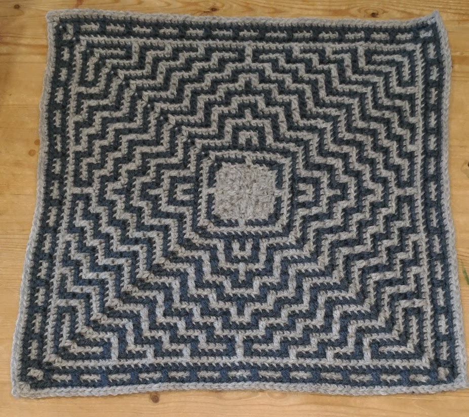
Third pillow progress photo: too much help. #IfIFitsISits
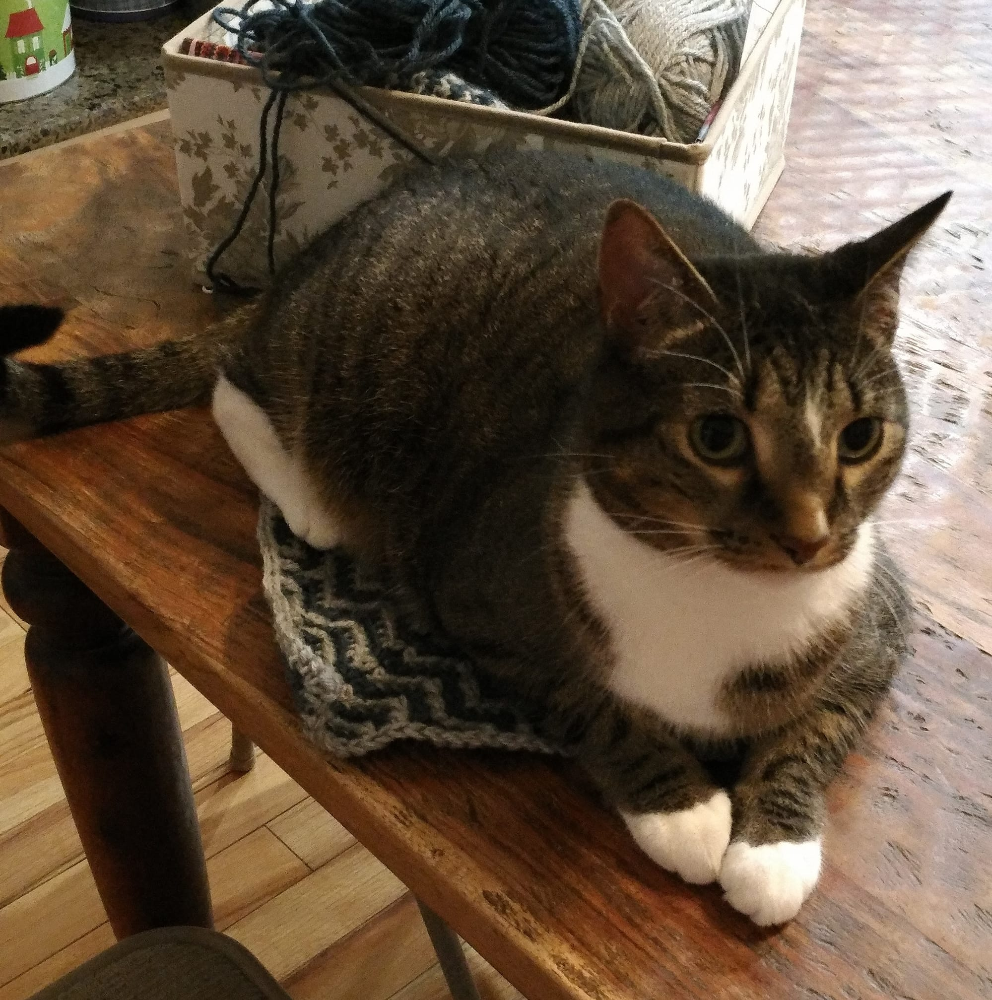
Anniversary gift (2020)
He wanted a soft basket that could hold glasses & phone. Pattern is based on the "Self Checks" blanket (see below).
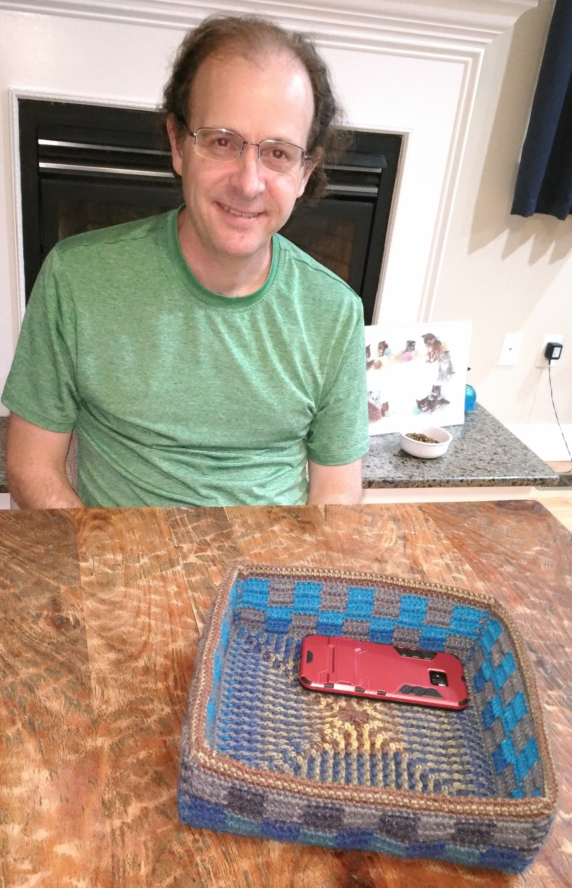
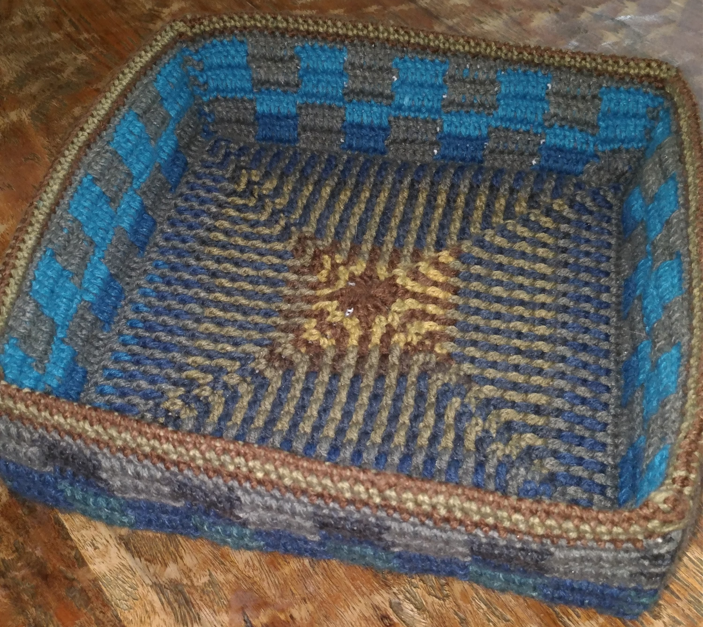
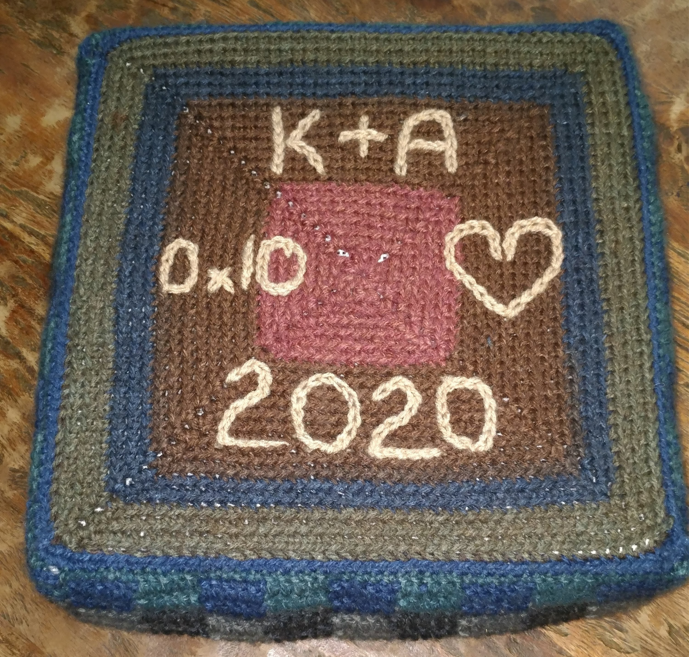
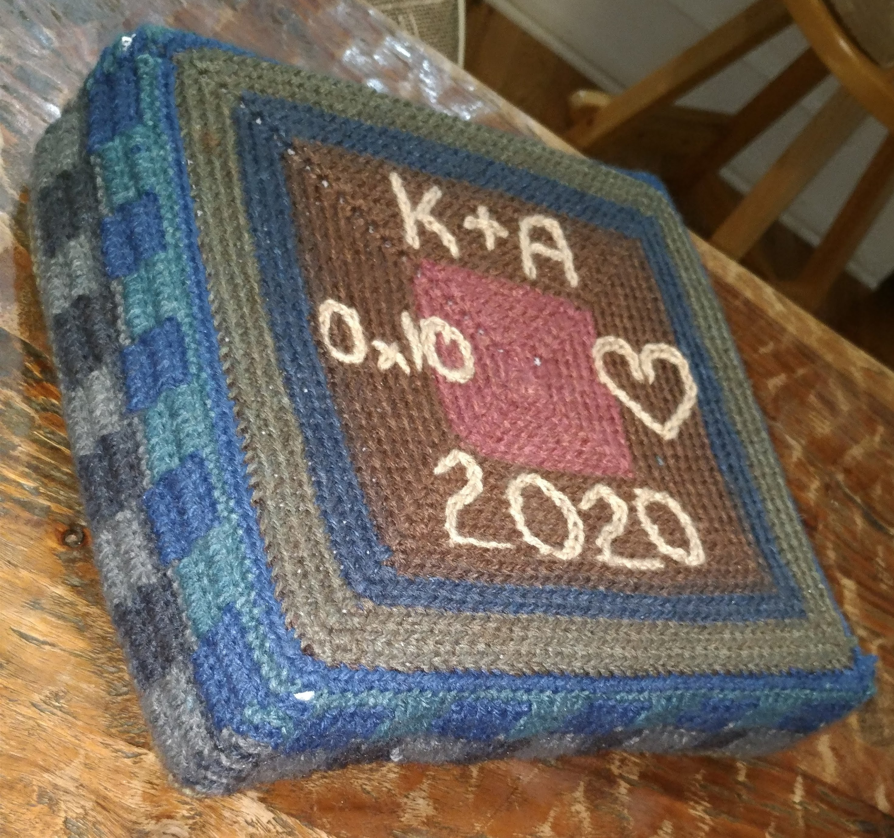
Giant crochet blanket (2019-2020)
Each block is 8 rounds of "Fairy Slippers" (also known as "Which Way Filet"), almost a full ball of Bernat Blanket yarn per block. The final blanket is 6 blocks wide by 5 high plus several rounds of single-crochet border, covers a king-size bed, and weighs over 11 pounds.
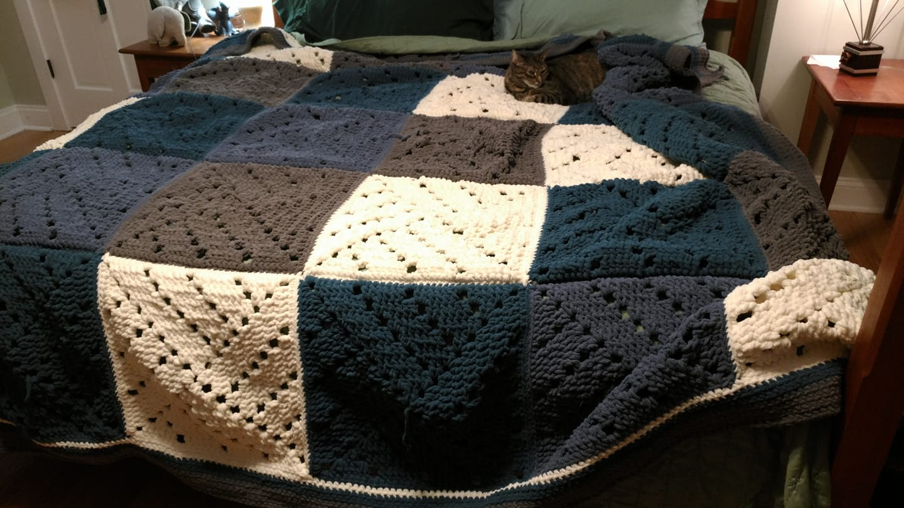
"Self Checks" blanket (2020)
Pattern by Lindsey George here
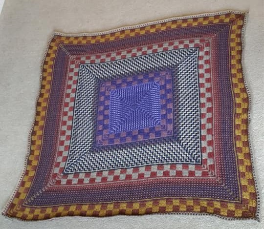
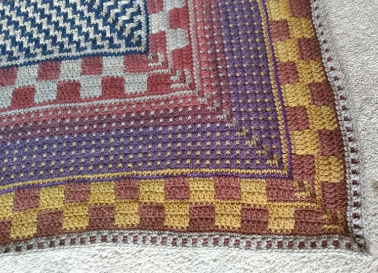
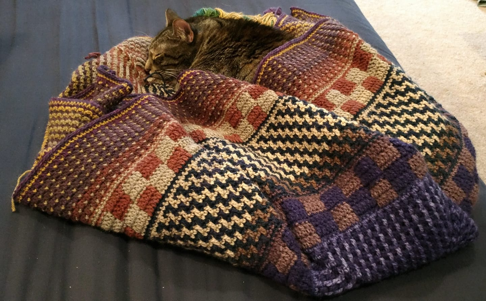
Digital Dragon Designs (1990s)
Embroidery patterns developed with Liz Kornya. Patterns were never published. Finished items were sold at Balticon, Philcon, etc. in the early 1990s. You are welcome to use these patterns and sell work made from them, as long as you credit me and Liz. You may not sell the patterns.
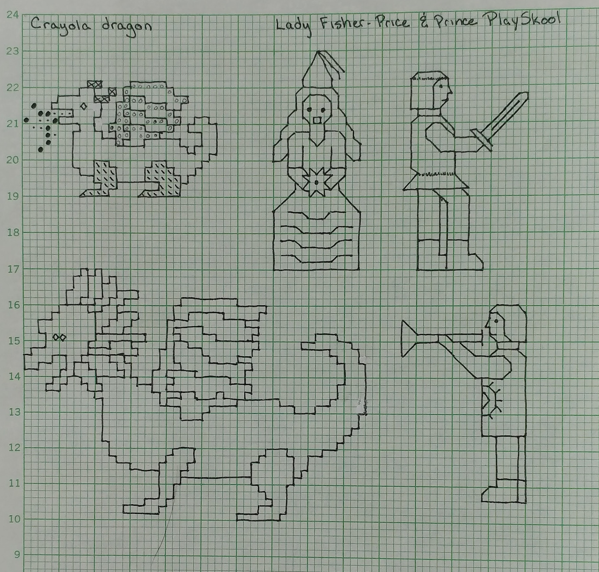
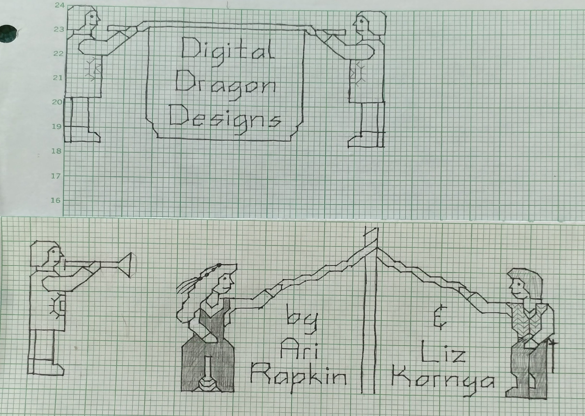
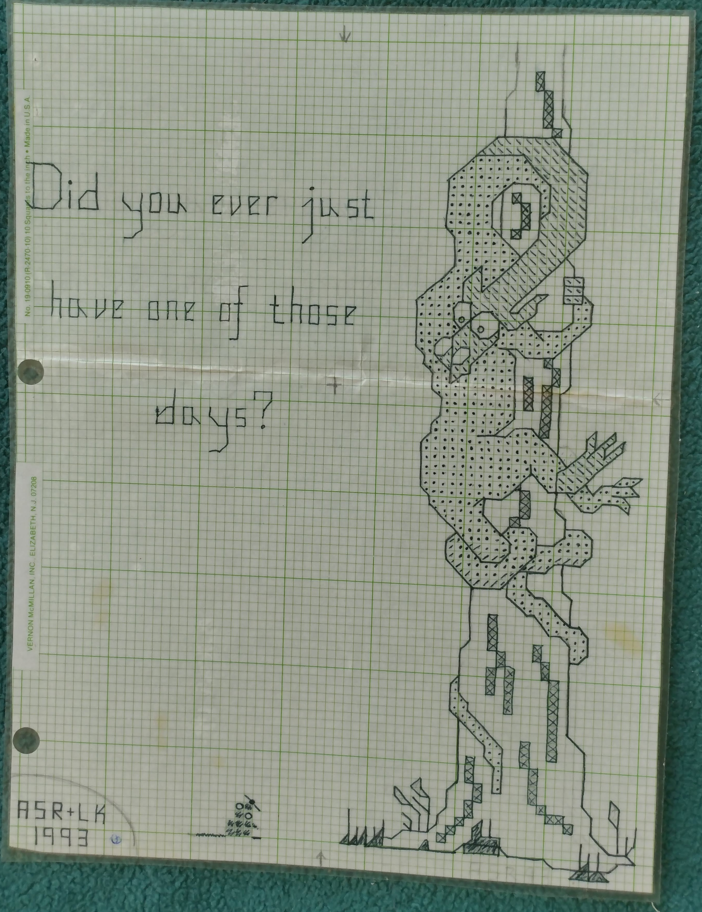
Yarn-bombed coatrack (2020)
Used for storing VR and AR headsets at work.
No pattern -- does it look like I had one?!?! :-)
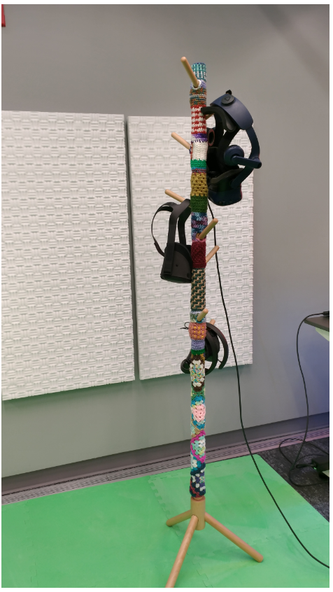